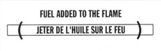

Friedrich Achleitner Constellation I
|
William Anastasi
|
|
|
|||
|
A SERIES OF STAKES SET IN THE GROUND AT REGULAR INTERVALS TO FORM A RECTANGLE / TWINE STRUNG FROM STAKE TO STAKE TO DEMARK A GRID / A RECTANGLE REMOVED FROM THIS RECTANGLE Nr. 001, 1968 |
One Quart Exterior Industrial Enamel Thrown on a Brick Wall Nr. 002, 1968 |
GLOSS WHITE LACQUER SPRAYED FOR 2 MINUTES AT FORTY POUND PRESSURE DIRECTLY UPON THE FLOOR Nr. 007, 1968 |
|
ONE HOLE IN THE GROUND APPROXIMATELY 1' x 1' x 1' / ONE GALLON WATER BASED PAINT POURED INTO THIS HOLE Nr. 010, 1968 |
TWO MINUTES OF SPRAY PAINT DIRECTLY UPON THE FLOOR FROM A STANDARD AEROSOL SPRAY CAN Nr. 017, 1968 |
1968 |
|
A 2 INCH WIDE AND 1 INCH DEEP TRENCH CUT ACROSS A STANDARD ONE-CAR DRIVEWAY 1968 |
A WALL CRATERED BY A SINGLE SHOTGUN BLAST1968 |
A 36" X 36" REMOVAL TO THE LATHING OR SUPPORT WALL OF PLASTER OR WALL-BOARD FROM A WALL Nr. 021, 1968 |
|
FIRE CRACKER RESIDUE OF EXPLOSIONS AT EACH CORNER OF THE EXHIBITION AREA NR. 027, 1968 |
THE RESIDUE OF A FLARE IGNITED UPON A BOUNDARY Nr. 029, 1969 |
A FIELD CRATERED BY SIMULTANEOUS STRUCTURED TNT EXPLOSIONS Nr. 030, 1968 |
|
A REMOVAL OF THE CORNER OF A RUG IN USE Nr. 050, 1969 |
A SQUARE REMOVAL FROM A RUG IN USE Nr. 054, 1969 |
Five Gallons water base tempera poured directly upon the floor and allowed to remain for the duration of the exhibition 1969 |
|
A TRANSLATION FROM ONE LANGUAGE INTO ANOTHER (EEN VERTALING VAN DE ENE TAAL NAAR DE ANDERE) Nr. 071, 1969 |
IGNITED Nr. 081, 1969 |
TRANSFERRED Nr. 088, 1969 |
|
A STAKE SET Nr. 091, 1969 |
THROWN Nr. 129, 1969 |
A RUBBER BALL THROWN AT THE SEA1969 |
|
A GLACIER VANDALIZED1969 |
10 LBS. MERCURY TOSSED FROM FINLAND TO SWEDEN1970 |
EARTH TO EARTH ASHES TO ASHES DUST TO DUSTNr. 151, 1970 |
|
TO THE SEAON THE SEAFROM THE SEAAT THE SEABORDERING THE SEANr. 157-161, 1971 |
DONE WITHOUTNr. 223, 1971 |
BESIDE ITSELFNr. 229, 1971 |
|
OVER AND OVER. OVER AND OVER. AND OVER AND OVER. AND OVER AND OVER. Nr. 234, 1971 |
IN AND OUT – OUT AND IN – AND IN AND OUT – AND OUT AND IN NR. 237, 1971 |
||
UNDERLAIN AND/OR OVERLAINNr. 256, 1971 |
NOISE MADE VERY SOFTLY (pianissimo) AND/OR MODERATELY SOFTLY (mezzopiano) Nr. 286, 1972 |
[TURNED] RED AS WELL AS BLACKNr. 288, 1972 |
|
... AND THEN UTILISED AS TO ANOTHER GENDERNr. 311, 1972 |
AND THEN UNTENDED AS ...1972 |
A ( ) C Nr. 324, 1973 |
|
... DIRECTLY BUT CLOSE ...Nr. 353, 1973 |
RIGHT IN THE MIDDLE OF _________ 362, 1973 |
HAVING STOOD DOWN [AS] (HAVING WAVED)Nr. 407, 1975 |
|
|
1973/1974 |
HUNG ABOUT (WITHIN A CONTEXT OF RENEWAL) [i.e. DONE ALL OVER] OFTEN DONE ALL OVER [WITHIN A RATIONALE OF RENEWAL] 429, 1976 |
||
A BIT OF MATTER AND A LITTLE BIT MORE Nr. 430, 1976 |
|||
PUT IN PLACE1978 |
Many coloured objects placed side by side to form a row of many coloured objects Nr. 462, 1979 |
AN ACCUMULATION OF SUFFICIENT ABRASION TO REMOVE ENOUGH OF AN OPAQUE SURFACE TO LET LIGHT THROUGH WITH MORE INTENSITY 1981 |
|
The salt of the earth mingled with the salt of the sea. 1982 |
DROPS OF BLUE WATER FORCED OVER THE RIM OF A POT MADE OF CLAY 1986 |
OVER THE WATER Nr. 529, 1986 |
|
Painted stones surrounding the ruins of a structure made of unpainted stones Nr. 534, 1986
|
WE ARE SHIPS AT SEA
|
 Nr. 615, 1989 |
|
nr. 645, 1990 |
Nr. 652, 1990 |
PLACED UPON THE HORIZON (CASTING SHADOWS)1990 |
|
DE GROSSES PIERRES DÉPLACÉES ICI ET LÀ ENTRE LES CIEUX ET LA TERRE1990 |
|||
SMASHED TO PIECES
|
|||
Nr. 672, 1991
|
Nr. 687, 1991 |
Nr. 691, 1991
|
|
AS LONG AS IT LASTS
|
|||
712A/712B, 1992 |
Nr. 713, 1992 |
Nr. 728, 1993 |
|
|
nr. 730, 1993 |
SOME LIMESTONE () SOME SANDSTONE ENCLOSED FOR SOME REASON1993 |
STRETCHED AS TIGHTLY AS POSSIBLE(SATIN) & (PETROLEUM JELLY)1994 |
|
DRY EARTH & SCATTERED ASHES OR DRY EARTH & BURIED GOLD OR1994 |
VON PUNKT ZU PUNKT OHNE DIE EIGENSCHAFTEN VERBUNDEN MIT STAHL, EISEN & STEIN1995 |
THE LIGHT OF DAY (SUCH AS IT IS) & ICELAND SPAR (AS CLOSE AS PURE)1996 |
|
|
ROWS OF CABBAGES MARKED WITH RED INK AND BURIED TOMORROW REIHEN VON KOHL MARKIERT MIT ROTER TINTE UND MORGEN VERGRABEN 1998 |
|
|
|
|
Nr. 007, 1968 |
TWO MINUTES OF SPRAY PAINT DIRECTLY UPON THE FLOOR FROM A STANDARD AEROSOL SPRAY CAN Nr. 017, 1968 [2007] |
|
1968 [2007] |
Nr. 021, 1968 |
|
||
|
Nr. 002, 1968 [1986] |
Nr. 021, 1968 |
A TRANSLATION FROM ONE LANGUAGE INTO ANOTHER (EEN VERTALING VAN DE ENE TAAL NAAR DE ANDERE) Nr. 071, 1969 [1996] |
|
1972 |
Nr. 430, 1976 [1983] |
1979 |
|
|
1987
|
1988 [2000] |
|
1990 |
1991 |
1991 |
|
1992 |
1995 |
1995 |
|
More or less / Give or take, 1997 |
STONES & STONES & STONES, 1997 |
|
|
1998 |
1999 |
|
|
|
|
2001 |
|
2006
|
|
|
|